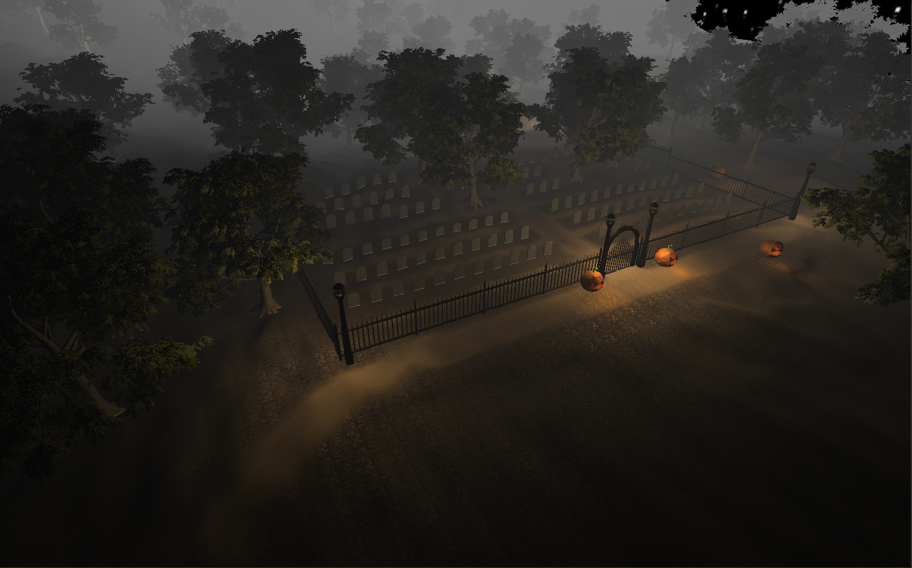
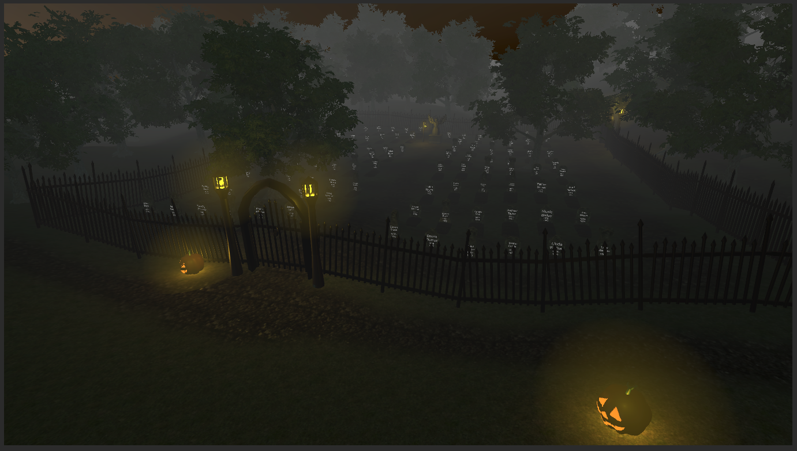
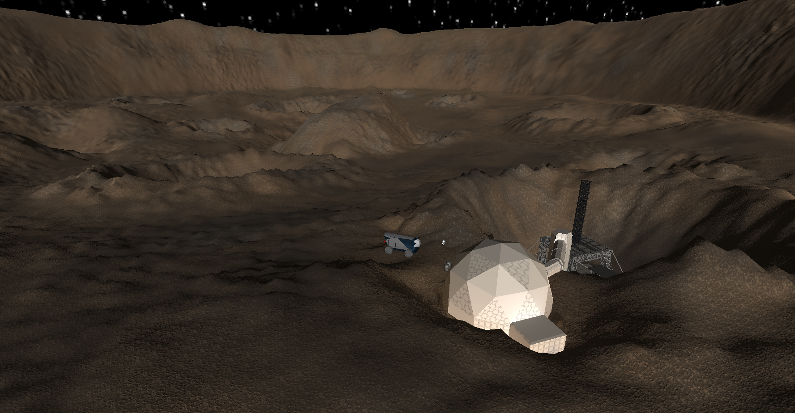

Static scenes rendered to either tell a story, or simply 'for fun' They have little to no gameplay value, but look nice.
1/3
Just a little render scene I did for Halloween. Very simplistic, but fun to make. My 3D modeling was very crude at that time.
2/3
A scene that I made for Halloween last year. I like the contrst to the first one. This one has much better models, better lighting (though stil needs some work) and written grave stones. I used procedural based automation for this one, letting the fences automatically align themselves with the gorund. The grave stones also palced themselves, and they gave themselves random names and age ranges. I input aroundf 60 first names, and 80 last names, plus a date range, my code did the rest.
3/3
A martian landscape I made for a progect a few years ago.